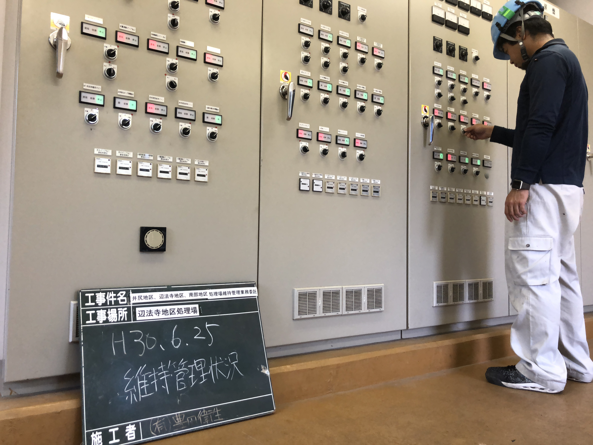
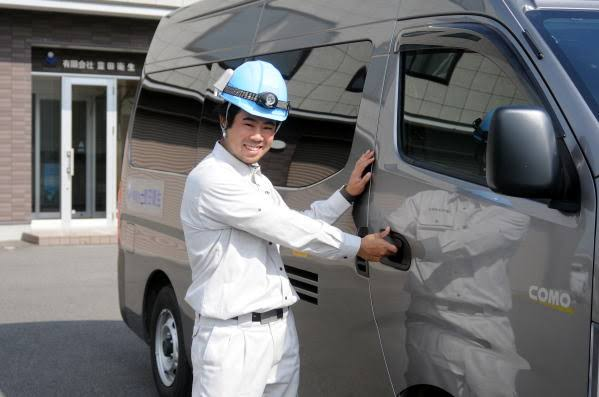
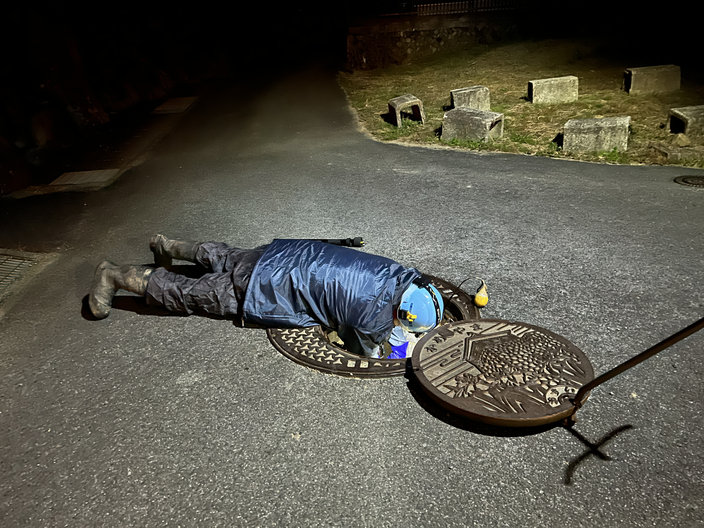
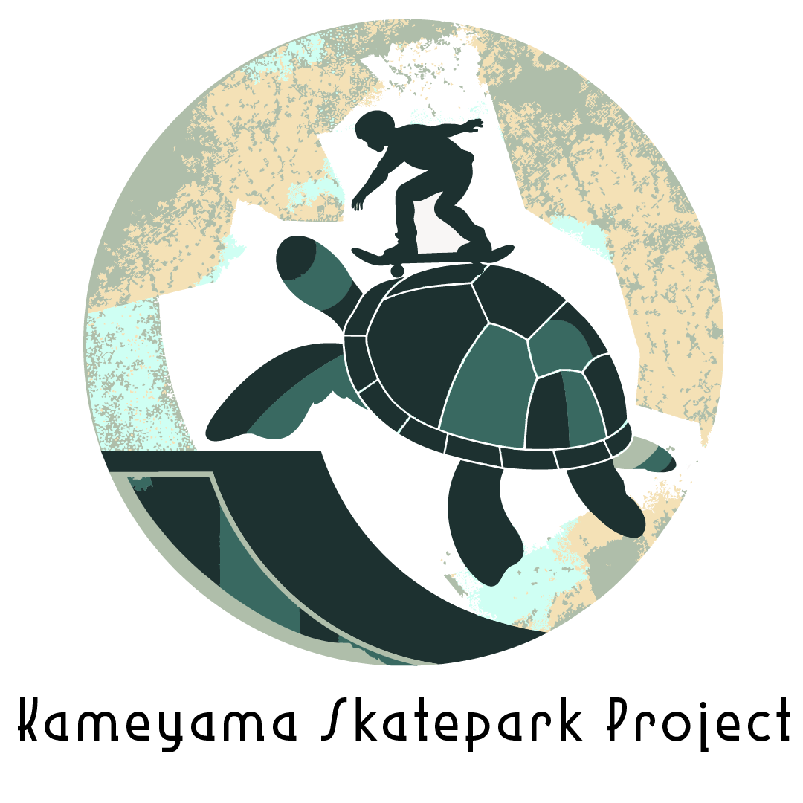
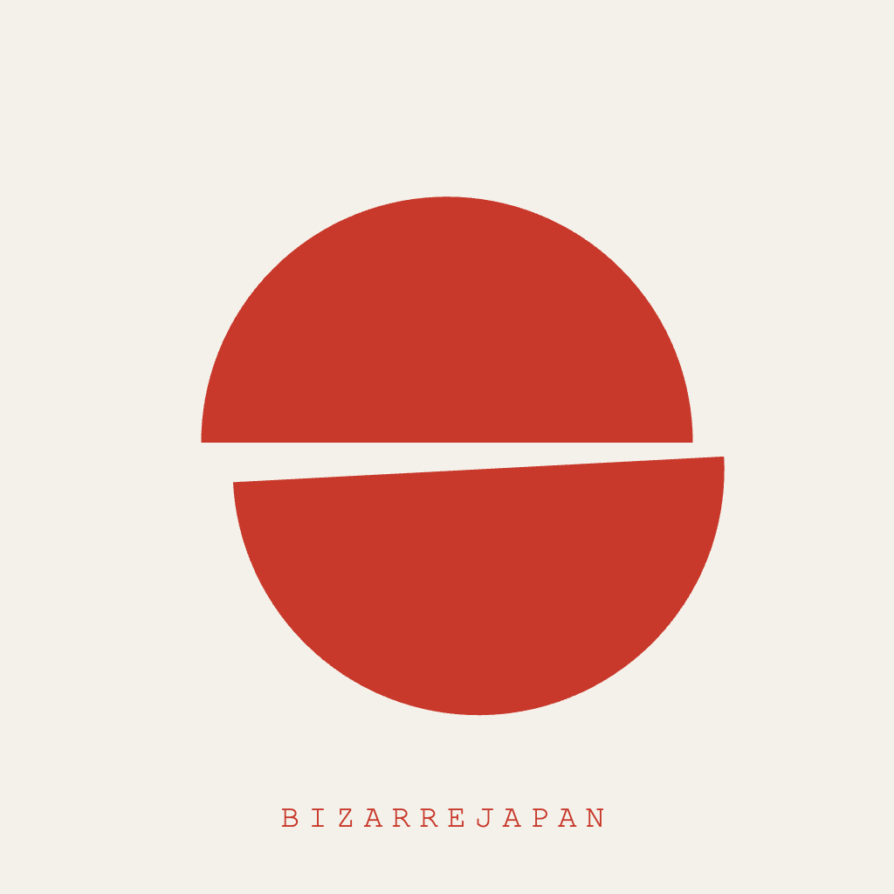
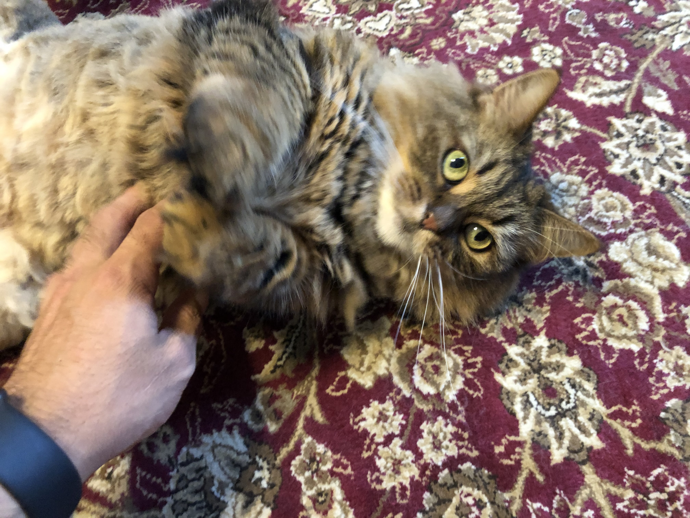
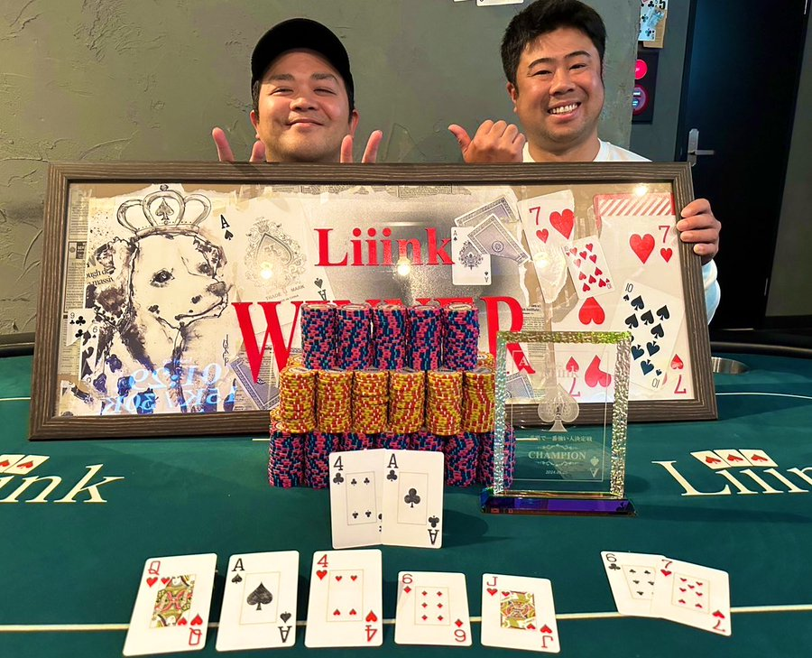
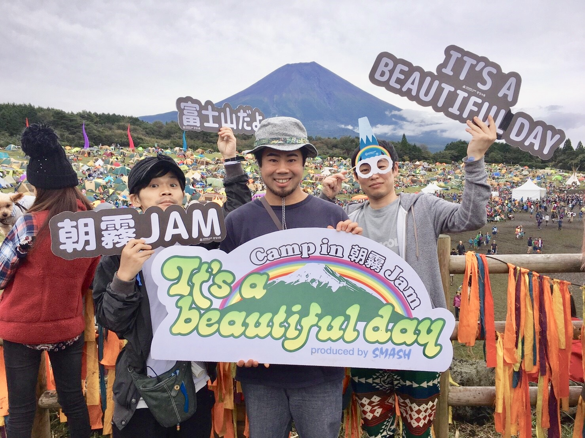
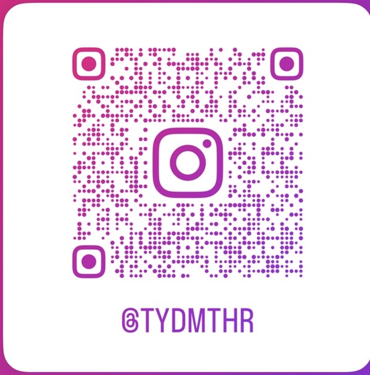

Toyoda Motohiro · Field Notes
NO. 01 — KAMEYAMA / MIE
No. 01 — A man who tends what is below, and what is on the surface.
地面の下と、
まちの表情を整える。
Abstract
下水道関連施設の維持管理を軸に、土木・建設業、地域プロジェクトの実行支援まで。 見えないインフラを丁寧に保ちながら、亀山スケートボードパーク・Bizarre Japan・亀山市関宿納涼花火大会など、 まちの「見える文化」にも手を動かしている。一滴の水から、まちを保つ。
BASED IN
三重県亀山市
AFFILIATION
有限会社 豊田衛生
取締役
三重県亀山市
AFFILIATION
有限会社 豊田衛生
取締役
§ 01
能力カード
Capacities01
Water Infrastructure
水インフラ維持管理
下水道関連施設の維持管理。制御盤・ポンプ・配管の点検と段取り。
02
Civil & Construction
土木・建設業
公共工事の段取り、車両装備、夜間運営、誘導・安全管理。
03
Local Execution
地域プロジェクト実行
スケートパーク構想、亀山市関宿納涼花火大会など、まちの行事の段取り。
04
Subculture
サブカルチャー運営
Bizarre Japan の運営。日本の奇景・奇習を採集し、海外へ発信。
§ 02
仕事
The Work · Below the Surface
PHOTO 02 · 制御盤確認 img_0858.jpg
PHOTO 03 · 作業車両 img_8670.jpg
PHOTO 04 · 夜間作業 img_8576.jpgSUBJECT
一滴の水から、まちを保つ。
下水道関連施設は、止まらないことが価値。 制御盤の小さな異音、流量の変化、夜間の誘導旗ひとつ。 見えにくい現場の段取りが、まちの当たり前を下から支えている。
- SCOPE
- 下水道関連施設 維持管理
- FIELD
- 土木・公共インフラ
- QUALIFIED
- 一級土木施工管理技士
浄化槽管理士
きのこ検定 3級 - AFFILIATION
- 有限会社 豊田衛生
§ 03
地域
In the town · On the Surface
LOGO · Kameyama Skatepark亀山スケートボードパークプロジェクト
Kameyama Skatepark Project

LOGO · Bizarre JapanBizarre Japan 運営
Bizarre Japan
PHOTO 07 · 関宿の夜
img_hanabi.jpg
亀山市関宿納涼花火大会
Sekijuku Hanabi
§ 04
個人の索引
Personal Index
植物 / アガベ
Agave & house plants

猫
Cats

ポーカー
Poker

音楽 / フェス
Music & festivals

写真
Photography

アンティーク
Antiques & figures
§ 05
連絡先
Get in touch一滴の水から、
まちを保つ。
まちを保つ。
〒519-0137 三重県亀山市阿野田町 1870
TEL 0595-82-1738 · FAX 0595-82-0173
FREE 0120-713-718
m.toyoda@toyodaeisei.com
toyodaeisei.com
TEL 0595-82-1738 · FAX 0595-82-0173
FREE 0120-713-718
m.toyoda@toyodaeisei.com
toyodaeisei.com
Colophon
NAME豊田 元洋 / Toyoda Motohiro
ROLE取締役
QUALIFIED一級土木施工管理技士 / 浄化槽管理士 / きのこ検定 3級
BASED三重県亀山市
EDITIONFIELD NOTES NO. 01
LINE
友だち追加

INSTAGRAM
@TYDMTHR
EIGHT
デジタル名刺
NOTE
記事を読む